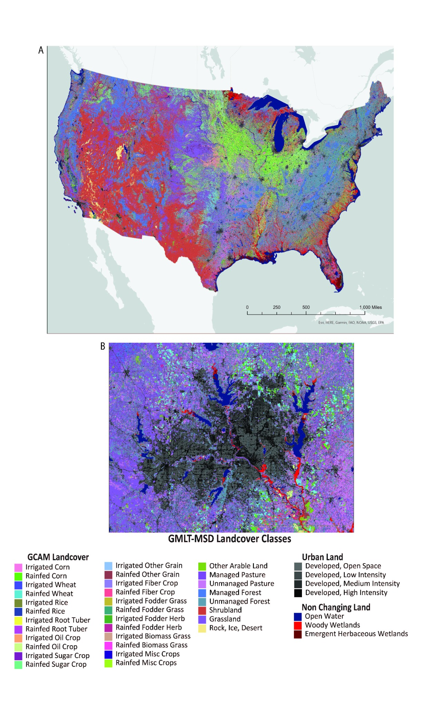
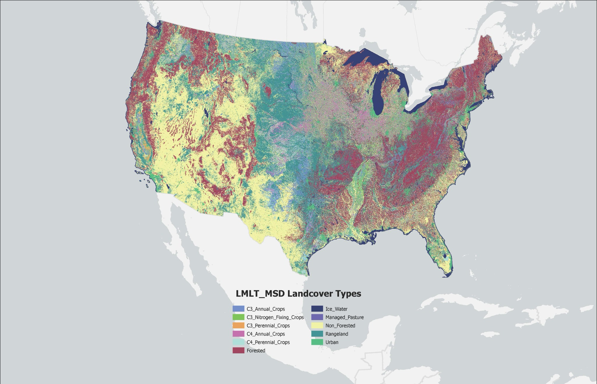
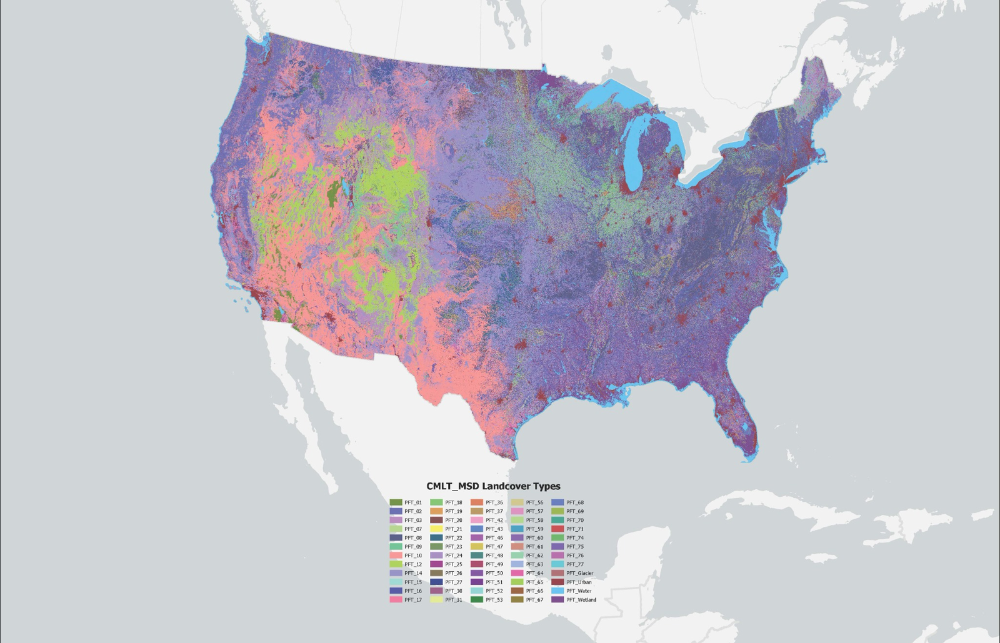
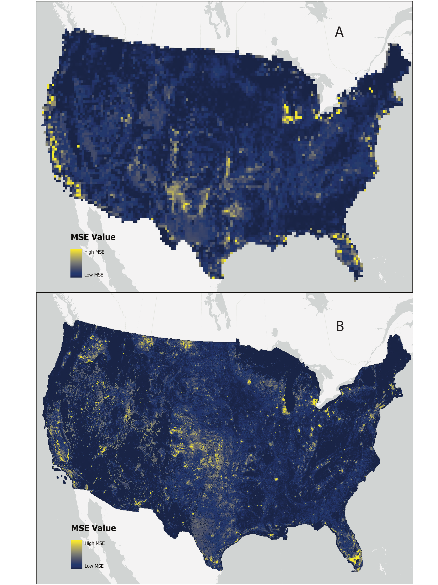

Build a shared classification
Combined National Land Cover Database and USDA Cropland Data Layer information into a hierarchical classification that retained distinctions needed by the target modeling systems.
I developed 30-meter land-use basemaps that translate a common U.S. landscape into several modeling systems. This first-author Scientific Data publication combines geospatial processing, classification design and quantitative comparison to make heterogeneous environmental datasets usable across GCAM, CLM and LUH2.

The problem
Human and Earth system models describe the same landscape with different classes, spatial resolutions and data structures. A regional study can inherit those inconsistencies before its own analysis begins. The project needed an empirical, spatially detailed foundation that could be translated across model frameworks.
My contribution
I developed the harmonized basemap series, combined land-cover and supporting spatial datasets, implemented Python processing scripts and ArcGIS refinements, and contributed the spatial comparisons documented in the paper. I am the first author of the resulting 2025 Scientific Data publication with Ryan A. McManamay.
Approach
Combined National Land Cover Database and USDA Cropland Data Layer information into a hierarchical classification that retained distinctions needed by the target modeling systems.
Refined cultivated crops with CDL, separated irrigated and rainfed agriculture, and distinguished managed and unmanaged forest and pasture. Climate zones, ecoregions and elevation supported vegetation-class refinements.
Used Python for crop masking and irrigation classification, with additional land-management and climate refinements in ArcGIS Pro. Produced 30-meter products for 2008, 2011, 2013, 2016 and 2019 across the conterminous United States.
Mapped the detailed MSD classes to GCAM, CLM and LUH2 categories. The translation accounted for thematic differences and for mutually exclusive pixels versus fractional cover in coarser grid cells.
Tabulated class areas within model grids and compared mapped fractions using mean squared error. This exposed where existing model baselines agreed with, or diverged from, the empirical basemaps.
Result & scope
The published dataset provides five contemporary 30-meter basemaps and interchangeable representations for multiple modeling frameworks. The accompanying code and figures document how the classes were assembled and how differences among model baselines were evaluated. Researchers can reuse this spatial foundation for regional analysis and model comparison.
Learning & progression
This work demonstrates the transfer from spatial processing to data-system design: deciding what different schemas mean, identifying where a direct crosswalk is insufficient, and evaluating the resulting transformations. Those same methods apply when integrating incompatible operational datasets or preparing geospatial features for later modeling.
Evidence & technical detail
Expand a section to see methods, figures or detailed results. Select any figure to view it at full size.
The research covers the conterminous United States at 30-meter resolution for 2008, 2011, 2013, 2016 and 2019. The class counts below describe the delivered representations; they are not accuracy metrics.
| Representation | Classes | Purpose |
|---|---|---|
| MSD | 259 | Detailed harmonized land-use and land-cover system |
| GCAM | 39 | GCAM-compatible land categories |
| CLM | 68 | CLM-compatible representation in this product |
| LUH2 | 12 | LUH2-compatible land states |
Original research figures show the source-to-class workflow and the detailed and model-specific basemap products.




Mean squared error compares matched fractions: MSE = (1 / n) × Σ(reference fraction − model fraction)². Lower values indicate closer agreement between the compared products, not proof that every land class is correct.

Related work
Geospatial and statistical research contributor
I combined Colombia forest-loss observations with terrain, access, land-use and protection variables to compare statistical explanations of deforestation. The work connects GIS feature preparation with interpretable modeling, while preserving the distinction between historical logistic-regression results and a separately documented Random Forest risk map.
Research contributor and publication coauthor
I automated watershed delineation, modeled stream reference status and investigated hydrologic-alteration relationships across Texas ecoregions. The work combines R-based API integration with Python modeling and contributed to a coauthored River Research and Applications paper, while keeping exploratory model-fit curves distinct from validated ecological conclusions.
Independent researcher & developer
I am developing a reproducible Sentinel-2 workflow to study urban growth in Quito’s eastern valleys. Current work covers imagery acquisition, temporal compositing and spatial mosaicking; a Tumbaco pilot provides the foundation for planned built-up land segmentation, change analysis and independent validation.
Let’s connect
I’m interested in work that connects analytical depth with useful implementation.